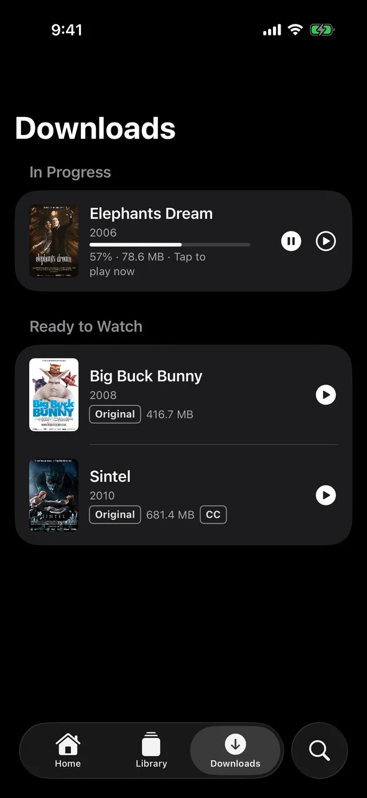
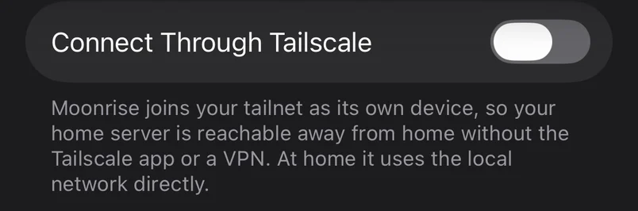
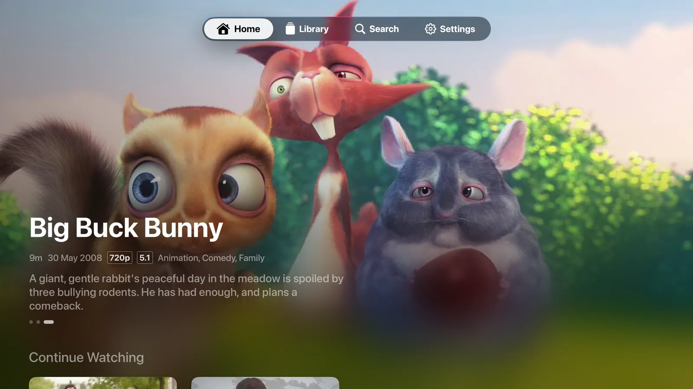
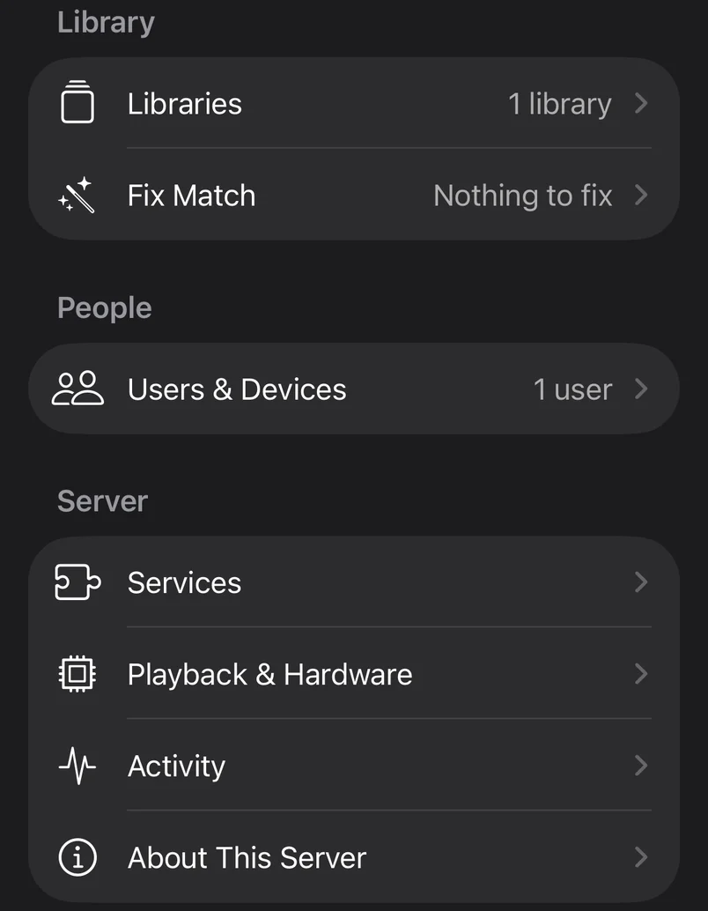
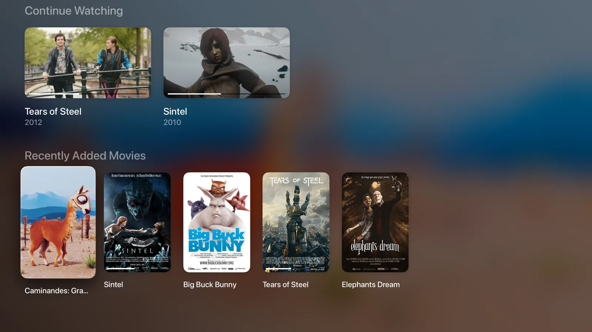

Your films are on a drive somewhere. Moonrise puts them on every screen.
A small server sits next to your films and shows, and fast native apps play them on Apple TV, iPhone, iPad, Mac, Android TV, Android phones and Windows. At home, on the train, or on the other side of the world.
Free and open source. Pre-release: for now you build the server and the apps yourself.
Press Resume. It’s already playing.
Every Moonrise app is written for its own platform: SwiftUI on Apple devices, Jetpack Compose on Android, WinUI on Windows.
Home is on screen the moment the app opens, from what it saved last time, and the pictures for the titles you’re most likely to open are fetched before you tap.
The server sits on your own network and sends a file as it is whenever the screen can play it, so the film starts at once, and skipping ahead lands at once.

Downloads you can watch while they download
Pick a film and a quality, and press Play whenever you like. The download plays from the moment its first minutes arrive, and if you skip ahead, it fetches from where you are.
When the connection drops or the server goes quiet, the download waits and carries on by itself when it’s back, without starting over. It keeps going in the background, and it’s saved piece by piece, so a half-finished download is never a broken file.
On iPhone, iPad, Mac and Android phones and tablets.
Your library, anywhere, with nothing opened to the internet

The iPhone, iPad and Mac apps have Tailscale built in. Turn on Connect Through Tailscale and sign in to your tailnet, and that’s the whole setup: no VPN app, and no ports opened on your router.
At home the app talks to the server over your own network. Away, it switches to the tailnet by itself.
On Apple TV, the Tailscale app does the same job.
Your files stay exactly as they are
MKV, MP4 and AVI, with H.264, HEVC, HDR, AV1 or DivX inside.
Moonrise only ever reads your folders. When a screen can play a file, it gets the file as it is, with every audio track. When it can’t, the server converts just what that screen needs, while you watch: on an NVIDIA, Intel or AMD graphics card, on a Mac’s own video hardware, or on the processor when that’s all there is.
Nothing to re-encode ahead of time, and no second copy of your library.

Set up and run from the sofa
Start the server, open the app, and the app does the rest. It finds the server on your network. You type the six-digit code the server shows, make your account and pick a folder, then watch the first scan fill the library in.
The folder can be on the server itself or a share on your NAS or a Windows PC: Moonrise reads the share directly, with nothing to mount.
Libraries, people and their devices, transcoding hardware and the logs are all managed from the same app. There is no web admin page to learn.

One library on every screen in the house
Everyone signs in as themselves, with their own Continue Watching, and it follows them from the TV to the phone.

- Apple TV, iPhone, iPad and Mac
- The most complete apps: everything on this page, including setup, managing the server, downloads and Tailscale.
- Android phones and tablets
- Setup, downloads and managing the server, like the iPhone and iPad app.
- Android TV
- Home, Library, Search, title pages and the player, and your films in the TV’s own Watch Next row.
- Windows 10 and 11
- Setup, Home, Library, Search, title pages and the player. Downloads and remote access are still to come.
- The server
- Docker on Linux or a NAS, a Mac, or a Raspberry Pi.
It stays in your house
Your films, your accounts and what everyone has watched live on your server and nowhere else. There’s no account with us, no analytics, and nothing is sent to the people who make Moonrise. Posters, plots and subtitle search are extras the server fetches for you, and everything plays without them.
Moonrise is free software: the server under the AGPL-3.0, the apps under the MPL-2.0. Read it, change it, keep it.
What is sent where, line by line.
It’s early. You can run it tonight.
Nothing is in an app store yet and there’s no published server image, so for now you build both yourself. With Docker, the server is three commands:
git clone https://github.com/paralainer/moonrise.git
cd moonrise/server
docker compose up -d --buildThen build the app for your screen, open it, and choose Connect to Your Server.
Moonrise is free. If you want to support its development, there’s a Buy Me a Coffee page.